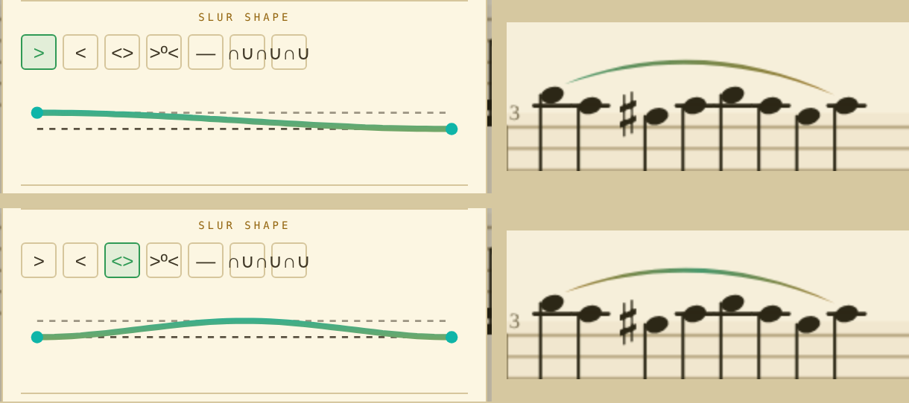

MMF: het stuk met zijn exacte stemming erin.
MMF is het eigen formaat van Music Motion. Anders dan een MIDI-bestand — dat getempereerde toetsnummers opslaat — slaat een MMF de exacte pythagorese identiteit van elke noot op: het weet of een noot een cis of een des is, en ze klinkt anders. Het opent in de Score en de Player, en het klinkt in het Cosmic Keyboard®.
Niet de noten: de hele uitvoering
Een MMF is geen afbeelding van de partituur en ook geen lijst van toetsen. Het is het stuk zoals de suite het begrijpt, per kanaal, met alles wat het als muziek doet klinken:
- De exacte toonhoogte van elke noot — haar pythagorese verhouding, geen afgerond getal. Cis en des zijn twee verschillende toonhoogtes en worden ook zo geschreven.
- Dynamiek als relatieve gegevens — de aanduidingen (ppp…fff), crescendo- en decrescendovorken en accenten, niet als vaste volumes.
- Articulatie en gebaar — legatobogen met hun richting, streken, tremolo, staccato, agogiek en de klankkleur van elk instrument.
- De 32 kanalen en hun orkestratie — elk met zijn pythagorese instrument, zijn notenbalken en zijn groepen.
- Vertolking die over een passage wordt geschreven — galm, echo, portamento en vibrato als regio van het stuk, en de regio's van ritmische ongelijkheid: per kanaal en per stem, niet per track.
- De werkfiche — het werkelijke tonale centrum van elk deel, dat niet altijd de geschreven voortekening is, met de maten waar het verandert. Daaruit weet het klavier in welk huis de muziek zich bevindt, en het stemt zichzelf opnieuw.
- Het pedaal — waar het wordt ingedrukt, waar de motor het opnieuw vastlegt en hoe ver de simile reikt; en de agogiek van het werk, met haar notatie.
- Het niveau van de balkgroepen van het werk — hoeveel elke positie binnen de balk daalt; dat is wat een loopje laat klinken als een frase in plaats van een rij identieke noten.
- En de vorderingen van de leerling, wanneer het bestand een oefening van de Coach is: de les reist in hetzelfde bestand mee als de muziek.
Elk formaat slaat iets anders op
De uitvoering
Toetsnummers (0–127), velocity en timing. Getempereerd van opzet: een cis en een des zijn dezelfde toets. Het weet niets van stemming of spelling.
De notatie
Hoe de pagina eruitziet: noten, stokken, voortekens, maten. Het onderscheidt cis van des op papier, maar speelt getempereerd af.
Identiteit en klank
De exacte pythagorese toonhoogte van elke noot plus de hele uitvoering. Cis ≠ des op papier en in de lucht. Het eigen formaat van de suite.
| MIDI | MusicXML | MMF | |
|---|---|---|---|
| Onderscheidt cis van des | nee | in de notatie | in notatie en klank |
| Stemming | getempereerd | getempereerd | exact pythagorees |
| Slaat de uitvoering op | gedeeltelijk | weinig | ja (dynamiek, streken, agogiek) |
| Opent in de suite | geïmporteerd | geïmporteerd | eigen formaat |
De Player zet een MIDI- of MusicXML-bestand om naar MMF: het komt getempereerd binnen en wordt pythagorees geboren, geordend volgens de voortekening van het bestand.
En het gaat weer naar buiten zoals het binnenkwam: de Score exporteert MusicXML met de toonaard en de maatsoort van elk segment, de sleutels en hun wisselingen, de voortekens volgens de geldende maatsoort, en de majeur- of mineurmodus die de werkfiche aangeeft. Zo reist het stuk in drie formaten, in beide richtingen: MMF sluit je werk niet op, het bewaart het beter.
De formaatversie is 1.1, en elk bestand legt vast welke Score het heeft opgeslagen. Bij het openen past de suite de migraties toe die dat bestand nog niet heeft gezien, zodat een MMF van zes maanden geleden in de huidige versie identiek opent — en dat is wat de belofte hierboven waarmaakt: het klinkt zoals op de dag dat het werd opgeslagen.
Stukken om in de suite te openen
De eerste goedgekeurde demo's, uit het publieke domein, getranscribeerd en gestemd in Music Motion. Ze openen in de Score of de Player van de suite en staan ook bij de downloads van de site. Er komen er nog meer bij.
Roemeense volksdansen (Sz. 56)
De zes dansen, op de pythagorese piano: de volkse halve tonen, waar de exacte stemming vanaf de eerste maat hoorbaar is.
Sinfonia's (driestemmige inventies), BWV 787–801
Alle vijftien, in drie stemmen, in drie stemmingen van dezelfde uitvoering: het Cosmic-klavecimbel — pythagorees, de stemming van de suite —, het welgetempereerde — Werckmeister III — en een .mid in gelijkzwevende stemming, die het Keyboard opent en op zijn cyaan toetsen speelt. Dezelfde noten en hetzelfde tempo in alle drie: alleen de stemming verandert.
Pianoconcerto in G — 2e deel (Adagio assai)
Grand Tonal-piano. De lange melodie van de rechterhand boven het ostinato: relatieve dynamiek en nuances van ademhaling.
Wie wat bezit
De muziekwerken behoren tot het publieke domein. Bartók, Bach en Ravel: hun werken zijn niet meer auteursrechtelijk beschermd, en daarom kunnen ze hier worden aangeboden.
Het MMF-formaat en deze bestanden zijn eigendom van Music Motion. De transcriptie, de pythagorese stemming en de uitvoering die in elk bestand zijn opgeslagen, zijn werk van Music Motion. © 2001–2026 Music Motion. Alle rechten voorbehouden. Het logo m Δ° m is een gedeponeerd merk (BOIP 1544147).
Persoonlijk en educatief gebruik. De specificatie van het MMF-formaat en de demonstratiebestanden die hier worden gepubliceerd, worden aangeboden onder de licentie Creative Commons Attribution–NonCommercial–NoDerivatives 4.0 International (CC BY-NC-ND 4.0): je mag ze downloaden, openen en bestuderen, met naamsvermelding van Music Motion; je mag ze niet verkopen of geld vragen voor het gebruik ervan, en ze ook niet in gewijzigde vorm herverspreiden.
MMF is een eigendomsformaat, geen open standaard. Het wordt gepubliceerd en gedocumenteerd zodat het gelezen, bestudeerd en onderwezen kan worden; daarom ligt de specificatie open en bloot. De naam en het formaat zijn beschermd door het auteursrecht en door hun gedateerde deponeringen (Zenodo en i-DEPOT), en de inschrijving van het merk MUSIC MOTION SCORESUITE bij het BOIP is in behandeling: een ander programma mag een bestand lezen, maar mag wat het doet niet voorstellen als MMF of als Music Motion. En wie het formaat, de specificatie ervan of deze bestanden in een commercieel product of een commerciële dienst wil gebruiken, heeft een overeenkomst met Music Motion nodig — schrijf naar contacto@musicmotionsuite.com en we praten erover.
Wat hier is ontstaan
De vastlegging. Beeldmerk m∆°m (het logo): BOIP — het Benelux-Bureau voor de Intellectuele Eigendom — nr. 1544147, ingeschreven op 9 maart 2026, klassen 9 (downloadbare inhoud en onderwijsapparatuur), 15 (klavierinstrumenten) en 41 (onderwijs en ontspanning; uitgeven van teksten), geldig tot 2036. Woordmerken MUSIC MOTION SCORESUITE (BOIP-aanvraag nr. 1558210) en COSMIC KEYBOARD, ingediend op 18 september 2026, in behandeling. i-DEPOT nr. 158643, BOIP, 27 maart 2026: verzegeld bewijs van inhoud en datum. Openbaar, citeerbaar en gedateerd depot op Zenodo: 10.5281/zenodo.19261067. ORCID 0009-0000-9767-8667. Deze pagina werd gepubliceerd op 15 september 2026; laatst herzien op 18 september 2026.
Wat wordt opgeëist en wat niet. Bijna niets in de muziek is helemaal nieuw, en deze suite bouwt voort op eerder werk dat we hieronder noemen. Wat volgt, scheidt twee dingen: eerst wat, voor zover ons onderzoek reikt, geen precedent heeft; daarna onze eigen manier om dingen op te lossen die gedeeltelijk al bestonden. Waar er een precedent is, zeggen we dat.
Zonder bekend precedent
- De BEAM vertolkt de noten die hij verbindt: de getekende balkgroep is de eenheid van vertolking. De motor leest de balkgroepering zoals ze op de pagina staat — ook groeperingen die de maatsoort tegenspreken —, niet een metrische hiërarchie die opnieuw uit de maatsoort wordt afgeleid; binnen die groep is de geschreven dynamiek het plafond en gaat geen enkele noot erboven, en elke positie daalt met een vaste verhouding ten opzichte van de vorige, volgens haar plaats in de groep. Automatische metrische nadruk bestaat (Sibelius, Finale, music21) en instelbare groepering bestaat (LilyPond, Sibelius, Dorico); de notatie van de groepering als gegeven voor de vertolking bestaat niet. Een balk verbindt noten: wat de pagina tekent, is wat de motor speelt.
Vier achtsten onder één BEAM: de eerste klinkt op de geschreven dynamiek (mf, het plafond) en elke volgende zakt met dezelfde verhouding ten opzichte van de vorige. - De vorm van de legatoboog is een parameter van de vertolking. Niet zijn aanwezigheid of zijn reikwijdte — die in elk programma het legato bepalen — maar zijn geometrie: de kromming, de richting en de fase worden gelezen als frasering en geven vorm aan de aanzet en de ademhaling van de noten die hij omspant. In het eerdere werk zijn de controlepunten van de kromme graveergegevens en niets meer.

Dezelfde boog met twee vormen: boven >, die afneemt; onder <>, die aanzwelt en terugkeert. Links de curve in de editor, rechts de boog in de partituur: de vorm verandert hoe de noten eronder klinken. - Het effect is een regio die aan een stem toebehoort. Galm, echo, portamento en vibrato worden over een passage geschreven en horen bij één stem binnen het gedeelde kanaal, opgeslagen in het partituurbestand en zonder kanalen of instanties van de motor te vermenigvuldigen. Effectregio's per passage bestaan (MuseScore, Dorico, Sibelius), en effecten per stem bestaan in Dorico, ten koste van één kanaal per stem. Ritmische ongelijkheid die tot een stem is beperkt — niet tot een notenbalk of een instrument — hebben we elders evenmin gevonden.
Twee stemmen in één kanaal. Het effectgebied (de band) hoort alleen bij de bovenstem: de onderstem blijft droog klinken, zonder een ander kanaal te openen. - TODAL. Een trappenklavier met vaste hand, waarop dezelfde positie in elke toonaard de juiste trap laat klinken, versmolten met zuivere pythagorese herstemming per toonaard over 35 toonhoogtes en een enharmonisch correcte spelling — cis en des zijn niet dezelfde noot —, plus het verhogen van de leidtoon. Trappenindelingen bestaan in gelijkzwevende stemming (Ableton Push "In Key", Novation Launchpad, het octrooi van Coles uit 1992) en herstemming die het tonale centrum volgt bestaat (Justonic; het octrooi van Panaiotis uit 2018, dat pythagorese stemming noemt maar noch reine stemming, noch verhoging van de leidtoon, noch enharmonische spelling specificeert). De combinatie van de drie is van ons.
En dit is onze manier om het te doen. Wat volgt, wordt niet aangeboden als uitvinding, maar als de manier waarop deze suite dingen doet, waarvan sommige bekend zijn: het is het werk, en het is wat het laat klinken zoals het klinkt.
Het instrument
- Cosmic Keyboard · de gedeelde toets. Elke witte toets is verdeeld: de bovenste 4/5 geven de natuurlijke toon, de onderste 1/5 de getempereerde referentie. Beide stemmingen worden op hetzelfde klavier gespeeld en vergeleken, noot voor noot.
- Het computertoetsenbord als instrument. ZXCVBNM voor het lage octaaf, ASDFGHJ voor het hoge, cijfers voor kruisen en Shift voor mollen: een pythagorees instrument in de handen van iedereen met een QWERTY-toetsenbord — geen hardware, niets te installeren. In de modus Tonal geven diezelfde rijen de trappen (TODAL), en het Minikeyboard van de Score is hetzelfde klavier binnen de editor.
- Axiomatisch systeem en tonaal systeem, met de apotome (2187/2048 = 3⁷/2¹¹) en de pythagorese komma (3¹²/2¹⁹) noot voor noot toepasbaar zonder dat de noot haar naam verliest. Tonale positie en Chord Lab. De pythagorese stemming en het enharmonische onderscheid zijn eeuwenoud en behoren tot het publieke domein: die eisen we niet op.
- ⬦ Tempered en de cyaan stroken. Dezelfde uitvoering in beide stemmingen tegelijk: dezelfde noten, hetzelfde tempo, één enkele veranderde variabele.
Schrift dat klinkt
- AGOG · geschreven agogiek, met een eigen notatie, en agogiek van de frase: de solist speelt met de tijd terwijl het maatraster blijft staan. Dat een getekende kromme het tempo bepaalt, bestond al — de Executable Shapes van Finale, Live Tempo van Sibelius —; van ons zijn het repertoire van tekens en het feit dat de agogiek in de partituur leeft als een bewerkbare laag naast de rest.
De frase-agogiek, in de fase MOVE: de aanslagen van de solist (oranje) lopen vooruit in het midden van de frase en betalen dat terug op het einde; de begeleiding (groen) blijft op het raster. Beide beginnen en eindigen samen, op de maatstreep. - ASYM · asymmetrische regio's per kanaal en per stem: ongelijkheid is niet langer een afspeelinstelling, maar wordt een gegeven van de partituur. Swing per passage en per notenbalk bestaat (Dorico, Sibelius, Finale); de reikwijdte per stem, en het delen van de groepseenheid met de balken, zijn van ons.
Acht achtsten, gelijk geschreven en per twee verbonden door de BEAM. De stem met het ASYM-gebied (oranje) speelt ze lang-kort; de andere stem in hetzelfde kanaal (groen) blijft ze gelijk spelen. - Legatobogen die hun bestemming en hun frasering behouden. Omhoog of omlaag, de fase, de adem, de aanzet die niet opnieuw begint. Dat een legatoboog legato activeert en noten verkort of verlengt, is standaard — Dorico doet het met zijn percentages, Human Playback van Finale doet het, samplebibliotheken doen het —, en dat een overbinding klinkt zonder nieuwe aanzet, is de definitie van het formaat: dat hebben wij niet uitgevonden. Van ons is de vorm van de kromme als gegeven, hierboven.
- Relatieve dynamiek. Acht treden in vaste verhouding, en het plafond als eigenschap van elke stem: een bas die als pianissimo-orgelpunt dient, steelt de kracht niet van de begeleiding die leven heeft. Dat een dynamiek relatief is in plaats van een vast volume, is niet van ons — MusicXML definieert het als een percentage van forte en Humdrum publiceert een dynamiekschaal in decibel met een constante stap —, en de dynamiek per stem, die in Dorico bestaat, evenmin. Van ons is haar rol als plafond van de balkgroep, hierboven.
- Aanpasbare ART, vorken en expressies. Articulatie, tekstvorken en expressies per kanaal en per selectie, die de motor bij het klinken respecteert in plaats van ze als inkt te laten staan.
- Toonaard en maatsoort per segment, en de werkfiche die het werkelijke tonale centrum aangeeft tegenover de geschreven voortekening: het klavier kleurt en stemt opnieuw waar de muziek van huis verandert, niet waar de kruisen veranderen.
De klank, zonder opnames
- De bank. Elk instrument is de fysische beschrijving van hoe het klinkt, geen opgenomen sample: krommen verankerd aan de eigen toonhoogtes van dat instrument, resonantie die de noot volgt (een boventoon in plaats van een vaste frequentie), de volgorde van de filters, en dynamisch bereik en balans vastgelegd op één enkele schaal voor het hele orkest.
- Lexicon · het woord en de aanraking. Knooppunten per familie die het geschreven teken vertalen naar het fysieke gebaar dat bij dat instrument hoort, in plaats van één effect voor allemaal.
- Register Response en de meetbank. Draaiknoppen in de taal van het onderzoek — corpus, lucht, helling, opening — en een WAV die een fiche wordt: de meting wordt BOVENOP de fiche van het instrument geschreven, nooit in haar plaats.
- De snarenbank · de aanrakingssimulator. Strijkstok op snaar in vier krommen: snelheid, gewicht, contactpunt en de klok van de stok (10–2), met streken bij naam — détaché, martelé, tremolo, sautillé, staccato, spiccato, flautato, pizzicato, col legno.
- Alles pythagorees, klavieren inbegrepen. In deze suite is temperatuur de aangekondigde uitzondering, niet het vertrekpunt.
Het formaat en de suite als één instrument
- MMF. Het stuk met zijn exacte stemming en zijn uitvoering erin: geen afbeelding van de partituur en geen lijst van toetsen.
- De apps als één instrument. Score, Cosmic, Console, Register, Player en Coach praten live met elkaar: wat geschreven is, klinkt in de motor en wordt aan de mengtafel gemengd zonder iets te exporteren. De aanspraak is de hele integratie als werkend systeem, niet elke laag op zich.
- De Console als meetinstrument. Faders in echte dB, een neutraalstand die alles naar nul terugbrengt, en de tabel van het gehoor die elke beslissing vastlegt, zodat je ze opnieuw kunt bekijken.
- Player · de kopiist. Hij verwijdert de constante verschuiving van elke track zonder noot voor noot te kwantiseren — daar leeft het rubato — en leidt de geschreven dynamiek af uit de gespeelde velocity's.
- Coach. Melodische regels en lessen met de oefening erin; de vorderingen van de leerling reizen mee in diens eigen bestand.
Wat we niet opeisen
De pythagorese stemming en het enharmonische onderscheid, eeuwenoud en publiek domein. Trappenklavieren in gelijkzwevende stemming en herstemming die het tonale centrum volgt (Ableton Push, Novation Launchpad, Justonic, de octrooien van Coles en Panaiotis). Expressieve weergave op basis van regels, waarvan het KTH-regelsysteem de stand van de techniek is — inclusief zijn timingregels die afhangen van sprongen —. Relatieve dynamiek (MusicXML) en de dynamiekschaal met geometrische verhouding (Humdrum). Dynamiek en effecten per stem, en speeltechnieken per regio (Dorico, MuseScore, Sibelius). Instelbare balkgroepering (LilyPond, Sibelius, Dorico, music21). Automatische metrische nadruk (Sibelius, Finale). De getekende kromme die het tempo bepaalt (Finale, Sibelius). Legato dat door de legatoboog wordt geactiveerd en de overbinding zonder nieuwe aanzet (Dorico, Finale, MusicXML). Expressiecontrole per noot (VST3, MPE, MIDI 2.0). De logaritmische of geometrische coördinaat, die elementaire wiskunde is. En notennaamcijfers, een eeuwenoude traditie.
De eigennamen van de suite — Cosmic Keyboard, Minikeyboard, TODAL, AGOG, ASYM, Intelligent Beams, Lexicon, Register Response, Coach, MMF — worden gebruikt als merken van Music Motion. Het auteursrecht dekt de code van de apps, de instrumentenbank en deze teksten zoals ze geschreven zijn. Deze publicatie dateert het bovenstaande als bewijs van auteurschap en als defensief eerder werk; het is geen octrooi en wil niet monopoliseren wat hierboven als publiek domein wordt vermeld. © 2001–2026 Music Motion. Alle rechten voorbehouden.